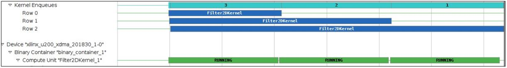
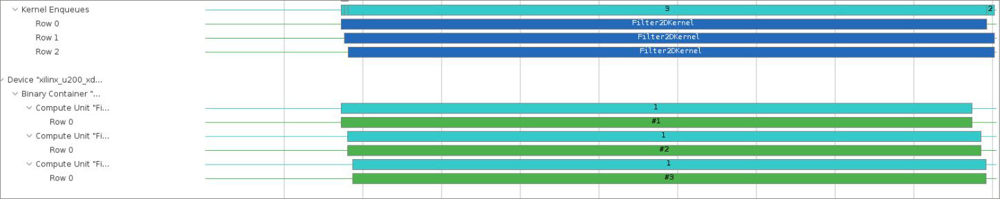

2021.1 Vitis™ Application Acceleration Development Flow TutorialsSee 2020.2 Vitis Application Acceleration Development Flow Tutorials |
Using Multiple Compute Units¶
Introduction¶
This tutorial demonstrates a flexible kernel linking process to increase the number of kernel instances on an FPGA. Each specified instance of a kernel is also known as a compute unit (CU). This process of increasing number of CU improves the parallelism in a combined host-kernel system.
Tutorial Overview¶
By default, the Vitis™ core development kit creates one CU for each kernel. A host program can use the same kernel multiple times for different sets of data. In these cases, it is useful to generate multiple CUs of the kernel to let those CUs run concurrently and improve the performance of the overall system.
For more information, see Creating Multiple Instances of a Kernel in the Application Acceleration Development flow of the Vitis Unified Software Platform Documentation (UG1416).
During this tutorial, you will:
Run hardware emulation and inspect the emulation report to identify multiple serial kernel executions.
Change the host code to enable out-of-order command executions.
Alter the kernel linking process to create multiple CUs of the same kernel.
Re-run the hardware emulation and confirm the parallel execution of the CUs.
This tutorial uses an image filter example to demonstrate the multiple CU feature. The host application processes the image, extracts Y, U, and V planes, and then runs the kernel three times to filter each plane of an image. By default, these three kernels run sequentially, using the same hardware resources because the FPGA only contains a single CU of the kernel. This tutorial demonstrates how to increase the number of CU, and then executing the kernel runs in parallel.
Before You Begin¶
This tutorial uses:
BASH Linux shell commands
2020.2 Vitis core development kit release and the xilinx_u200_gen3x16_xdma_1_202110_1 platform. If necessary, it can be easily extended to other versions and platforms.
IMPORTANT:
Before to running any of the examples, make sure you have installed the Vitis core development kit as described in Installation in the Application Acceleration Development flow of the Vitis Unified Software Platform Documentation (UG1416).
If you run applications on Xilinx® Alveo™ Data Center accelerator cards, ensure the card and software drivers have been correctly installed by following the instructions on the Alveo Portfolio page.
This tutorial module contains a pre-compiled OpenCV™ library compiled by gcc-6.2.0, and requires gcc/g++ version 5.5 at least, or will return an error during host code compilation. You must also set the LD_LIBRARY_PATH using the following code to pick the required runtime library related to gcc-6:
export LD_LIBRARY_PATH=$LD_LIBRARY_PATH:$XILINX_VITIS/lib/lnx64.o/Default
Accessing the Tutorial Reference Files¶
To access the reference files, enter the following in a terminal:
git clone http://github.com/Xilinx/Vitis-Tutorials.Navigate to
Hardware_Acceleration/Feature_Tutorials/05-using-multiple-cudirectory, and then access thereference-filesdirectory.
Makefile Flow¶
You can observe the Makefile used for this tutorial in reference-files/Makefile. The top-level settings include:
VPP: Vitis compiler path to compile the kernel code.
EMCONFIGUTIL: The path of the utility that creates emulation configuration file,
emconfig.json.DSA: The target platform.
LFLAGS: The linker option using the OpenCV library for the host code linker.
-Wl,-rpath,./opencv/opencv_gcc -L./opencv/opencv_gcc -lopencv_core -lopencv_highgui
EXE_OPT: The runtime options passed as command line arguments: Compiled kernel
xclbinfile, input image.
Run Hardware Emulation¶
Run hardware emulation with the following command.
make check MODE=hw_emu
For hardware emulation (hw_emu), the kernel code is compiled into a hardware model, which is run in a hardware simulator, while the rest of the system uses a C simulator. Building and running takes longer but provides a detailed, cycle-aware, view of kernel activity. This target is useful for testing the functionality of the logic that will run in the FPGA and for getting initial performance estimates.
NOTE: For instructions on how to build the host software and hardware, refer to the Vitis Getting Started tutorial.
Inspect the Host Code¶
While the emulation run is executing, in another terminal, open the
src/host/host.cppfile.Inspect lines 255-257. You can see that the Filter function is called three times for the Y, U, and V channels.
request[xx*3+0] = Filter(coeff.data(), y_src.data(), width, height, stride, y_dst.data()); request[xx*3+1] = Filter(coeff.data(), u_src.data(), width, height, stride, u_dst.data()); request[xx*3+2] = Filter(coeff.data(), v_src.data(), width, height, stride, v_dst.data());
This function is described from line 80. Here, you can see kernel arguments are set, and the kernel is executed by the
clEnqueueTaskcommand.// Set the kernel arguments clSetKernelArg(mKernel, 0, sizeof(cl_mem), &mSrcBuf[0]); clSetKernelArg(mKernel, 1, sizeof(cl_mem), &mSrcBuf[1]); clSetKernelArg(mKernel, 2, sizeof(unsigned int), &width); clSetKernelArg(mKernel, 3, sizeof(unsigned int), &height); clSetKernelArg(mKernel, 4, sizeof(unsigned int), &stride); clSetKernelArg(mKernel, 5, sizeof(cl_mem), &mDstBuf[0]); // Schedule the writing of the inputs clEnqueueMigrateMemObjects(mQueue, 2, mSrcBuf, 0, 0, nullptr, &req->mEvent[0]); // Schedule the execution of the kernel clEnqueueTask(mQueue, mKernel, 1, &req->mEvent[0], &req->mEvent[1]);
All three
clEnqueueTaskcommands are enqueued using a single in-order command queue (line 75). As a result, all the commands are executed sequentially in the order they are added to the queue.Filter2DDispatcher( cl_device_id &Device, cl_context &Context, cl_program &Program ) { mKernel = clCreateKernel(Program, "Filter2DKernel", &mErr); mQueue = clCreateCommandQueue(Context, Device, CL_QUEUE_PROFI LING_ENABLE, &mErr); mContext = Context; mCounter = 0; }
Emulation Result¶
Review the generated Timeline Trace report (timeline_trace.csv).
vitis_analyzer filter2d.hw_emu.xclbin.run_summary
NOTE: The run directory contains a file named
xrt.ini. This file contains runtime options that generate additional reports such as the Profile Summary report and Timeline Trace.
After the Vitis analyzer loads, click Application Timeline located on the left side panel. The Application Timeline report collects and displays host and device events on a common timeline to help you understand and visualize the overall health and performance of your systems.
At the bottom of the timeline, you can see three blue bars, one for each kernel enqueing from the host. The host enqueues the kernel execution sequentially (in order) because it uses a single, in-order command queue.
After the blue bars, you can see three green bars, one for each kernel execution. They are working on the FPGA sequentially.
Improve the Host Code for Concurrent Kernel Enqueuing¶
Edit the
src/host/host.cpphost file to change line 75. You will change this line to declare the command queue as an out-of-order command queue.Code before the change:
mQueue = clCreateCommandQueue(Context, Device, CL_QUEUE_PROFILING_ENABLE, &mErr);
Code after the change:
mQueue = clCreateCommandQueue(Context, Device, CL_QUEUE_PROFILING_ENABLE | CL_QUEUE_OUT_OF_ORDER_EXEC_MODE_ENABLE, &mErr);
(Optional) Run the hardware emulation with the changed host code.
If you choose to run the Hardware Emulation feature, use the Timeline Trace to observe that using the out-of-order queue enables the kernels requested to be executed at almost the same time as one another (the blue bars represent kernel enqueue requests scheduled by the host).
However, though the host scheduled all these executions concurrently, second and third execution requests are delayed as there is only one CU on the FPGA (the FPGA still executes the kernels sequentially).

In the next step, you will increase the number of CU on the FPGA to allow three host kernel executions concurrently.
Increasing the Number of CUs¶
Now, build the kernel xclbin again by altering the link step to generate three CUs of the same kernel.
Open the link.cfg file, and change the nk setting.
nk = Filter2DKernel:3
Run Hardware Emulation and Inspect the Change¶
Regenerate the
xclbinfile. You need to domake cleanandmaketo delete the existing xclbin with one CU and to create a new xclbin with three kernel CUs.make clean make check MODE=hw_emu
View the new
timeline_trace.csvin the Vitis analyzer.
You can now see that the application takes advantage of the three CUs, and that the kernel executions overlaps and executes in parallel, speeding up the overall application. 
Conclusion¶
You have learned how to alter the kernel linking process to execute same kernel functions concurrently on an FPGA.
Copyright© 2020 Xilinx